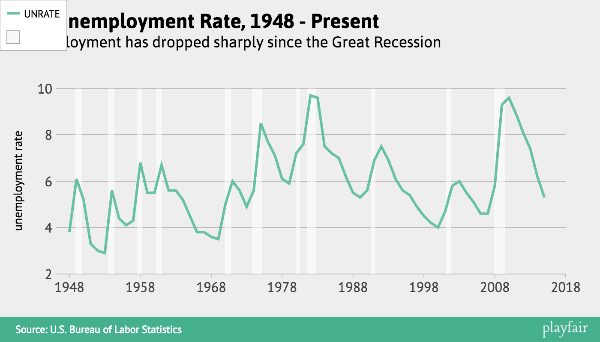

Making a simple graph
Very important disclaimer: Playfair is currently only compatible with Chrome.
Again, the hosted version of Playfair is available here: austinclemens.com/Playfair/playfair.html
Load the data from the first tutorial and make sure you change the DATE column to the date type.
To chart data, select the Chart tab from the main navigation bar. Then select the Lines subtab. The various dropdown menus here are already populated with the names of our two columns - DATE and UNRATE. To make a simple line chart of the unemployment rate in the US since 1948, we just select DATE as the x-variable and UNRATE as the y-variable.
Then, below the graph placeholder, click the button. Playfair will display this graph:

You can try doing something similar in the Points subtab to see how Playfair's other charting options are similar. Try changing the Connect On dropdown to UNRATE (it is connecting on DATE by default) and hitting the button. Line color and line size won't do much with this data set but these will be covered later in the tutorial.
We may want to add some labels to this graph. Click the Design tab. The first subtab is Text Elements. Here you can enter a headline, subhead, axis labels, and a note/source for the footer. I'm also going to pop over to the Shading subtab in Chart and turn on US recession shading. After clicking again, my chart looks like this:
This key doesn't look right, and there are a few other adjustments I want to make, so next we'll look at annotating and adjusting a graph we've made.